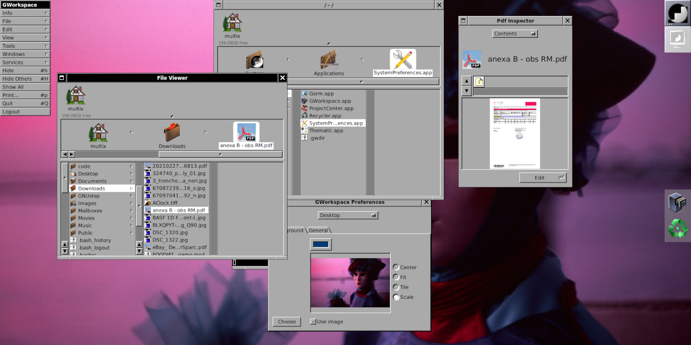

Project Center
IDE and GUI development, GNUmakefile generation and GORM real-time integration.

Windows Compatibility
GNUstep can easily be used to port or create applications on other platforms including Windows.
A Framework suited for development of advanced GUI desktop applications or server applications. It closely follows Apple's Cocoa APIs and is portable to a variety of platforms and architectures.
The GNUstep Project offers Development tools for command-line and GUI development, as well as the foundations for a Desktop environment, which other projects can complete.

IDE and GUI development, GNUmakefile generation and GORM real-time integration.
GNUstep can easily be used to port or create applications on other platforms including Windows.
GNUstep provides the foundations for a portable desktop environment, learn more about more about our user Experience, official applications and concepts.
Or directly check the comprehensive list of applications on our Wiki
application pages.
Read more about the GNUstep project, or the people behind it.
GNUstep provides an environment to easily develop advanced GUI desktop applications as well as server applications.
GNUstep's core framework provides open source version of the Cocoa APIs and tools for as many platforms as possible.
GNUstep provides a robust implementation of the AppKit and
Foundation libraries as well as the development tools
including the advanced interface designer Gorm (the InterfaceBuilder) and the IDE
ProjectCenter (ProjectBuilder/Xcode).
Thematic instead provides a user-friendly access to theming.
GNUstep seeks to be source code compatible with Cocoa, it can
thus be used to develop and build cross-platform applications
between Macintosh (Cocoa), Unix (Solaris) and Unix-like (GNU/Linux and GNU/Hurd, NetBSD, OpenBSD, FreeBSD) platforms as well as Windows
GNUstep's main development language is Objective-C, but
GNUstep is not limited to that.
Please see our documentation area for more about developing with GNUstep.
More?